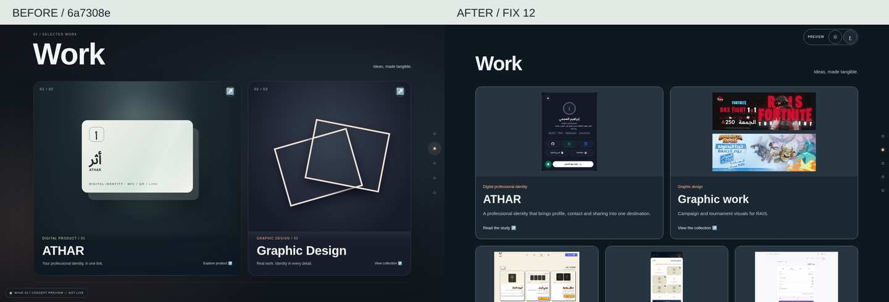
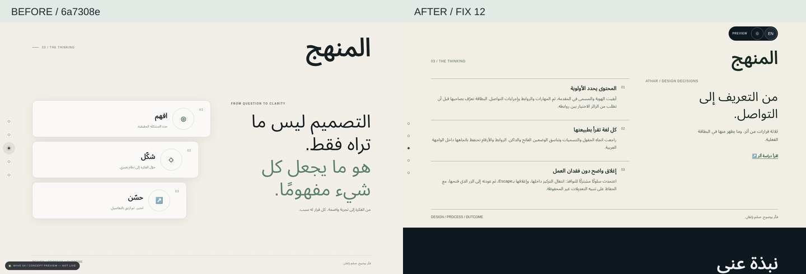
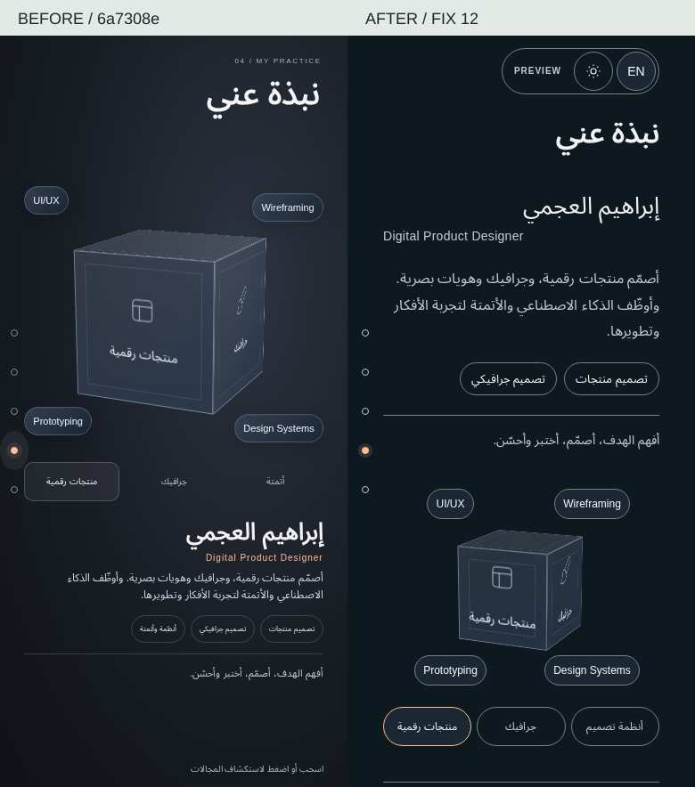
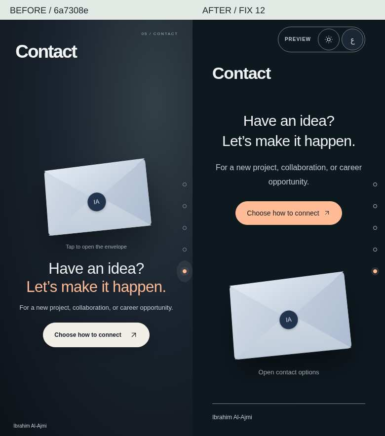

25 نوفمبر 2026 · Concept only · مراجعة إغلاق القضايا الـ12
Portfolio — Visual & Functional QA
Baseline: 6a7308e751f0cecdc4a2730b0e1b1ef06bb34baf. محتوى وأصول المشاريع من السجلات المنشورة في 04e7b801c8f6ced5cca1c6e158b6b4dd8b498715. التقرير السابق سجل 14 إصلاحًا؛ هذا الملحق يغلق القضايا الـ12 المتبقية ويعيد فحص الرحلة.
النتيجة وما تغيّر
أصبح Work دليلًا على المنتجات والجرافيك، لا مجرد غلافين بصريين. Approach يربط الكلام بقرارات ATHAR الفعلية. About يقدّم الاسم والتخصص قبل المكعب. أدوات اللغة والمظهر دائمة، والتواصل إجراء موحّد. تغيّر طول الأقسام إلى طول المحتوى بدل ضغط النص والصور لإجبارها على شاشة واحدة؛ Hero المعتمدة وترتيب Hero → Work → Approach → About → Contact بقيا محفوظين.
المقارنة المصوّرة
Work / اكتمال الصور والأعمال

نفس المقاس واللغة. قبل: 6a7308e. بعد: نسخة الإصلاحات الحالية. اليسار قبل، اليمين بعد.Approach / دليل التفكير

نفس المقاس واللغة. قبل: 6a7308e. بعد: نسخة الإصلاحات الحالية. اليسار قبل، اليمين بعد.About / أولوية التعريف

نفس المقاس واللغة. قبل: 6a7308e. بعد: نسخة الإصلاحات الحالية. اليسار قبل، اليمين بعد.Contact / أدوات وتواصل

نفس المقاس واللغة. قبل: 6a7308e. بعد: نسخة الإصلاحات الحالية. اليسار قبل، اليمين بعد.Issue Register
خطوات إعادة الإنتاج والسبب الجذري
QA02 · Work · P1
صور RAIS متراكبة ومقصوصة داخل مساحة غير متناسبة.
إعادة الاختبار: افتح Work عند 390px وقارن اكتمال الإعلانين.
السبب: CSS / Layout: absolute positioning + fixed aspect ratio + object-fit:cover
الإصلاح: مسارات صور CMS نفسها، contain، صفّان دون تراكب.
QA03 · Work · P1
النموذج يعرض عملين فقط رغم وجود خمس وجهات موثقة.
إعادة الاختبار: افتح Work ثم مرّر حتى آخر بطاقة؛ اختبر وجهات البطاقات الخمس.
السبب: Content / Data: hand-written two-item list
الإصلاح: ATHAR، Graphic، BU’D، IAU Student App، SKY من السجلات المنشورة المعتمدة.
QA04 · Approach · P2
منهج عام ومكرر ومساحات لا تدعم قراءة المحتوى.
إعادة الاختبار: افتح Approach بالعربية والإنجليزية وقارن الدليل بدل خطوات عامة.
السبب: Content / Design decision / Layout: generic steps inside forced viewport
الإصلاح: ثلاثة قرارات فعلية من دراسة ATHAR، بطول محتوى طبيعي ورابط للدراسة.
QA05 · All / Gallery · P2
نصوص وصفية وبيانات صغيرة يصعب قراءتها.
إعادة الاختبار: افتح 320×568 و1440×900؛ اقرأ الوصف والعناوين وبيانات المعرض.
السبب: Typography / Responsive: viewport compression and 9–11px metadata
الإصلاح: المتن 15–16px، البيانات 12–14px، ترويسة القسم 34–64px؛ لا تصغير قسري لإكمال الشاشة.
QA06 · About · P2
المكعب يسبق التعريف ويستهلك مساحة الجوال.
إعادة الاختبار: افتح About عند 390px، ثم بدّل إلى 1440px.
السبب: Layout / DOM reading order and mobile grid-row assignment
الإصلاح: التعريف أولًا؛ المكعب 105px على الجوال وحجم مضبوط على سطح المكتب.
QA07 · Navigation · P2
تبديل اللغة لا يتاح إلا في Hero.
إعادة الاختبار: من كل قسم بدّل اللغة مرتين، ثم حدّث الصفحة على الرابط نفسه.
السبب: DOM / Navigation: control nested inside an inactive scene
الإصلاح: شريط ثابت للغة والمظهر، يحفظ القسم وURL hash وRTL/LTR.
QA14 · Engineering · P2
نسخ AR/EN مستقلة، بيانات ثابتة، وعارض Work قديم مخفي.
إعادة الاختبار: شغّل npm run build:concept؛ افحص غياب .work-body و#project-modal، وطابق content-manifest مع YAML.
السبب: Architecture / DOM / JS: duplicate sources and retired carousel still mounted
الإصلاح: قالب واحد ومولّد بناء من CMS؛ إزالة العارض المخفي وبياناته وملف JS الملغى.
QA15 · Theme · P2
غياب التحكم بالفاتح والداكن في النموذج.
إعادة الاختبار: غيّر الثيم، افتح دراسة ومعرضًا ثم حدّث الصفحة.
السبب: Design system / JS: shared preference not connected
الإصلاح: استعادة المفتاح portfolio-theme في الرئيسية والمعرض والدراسات؛ contrast لكل وضع.
QA16 · ATHAR · P1
تمثيل CSS لا يوضح واجهة المنتج، ورابط مباشر دون دراسة.
إعادة الاختبار: افتح أول بطاقة Work، راجع الصورة وقرارات التصميم وملاحظة الدليل.
السبب: External asset / Content: mock visual replaces existing evidence
الإصلاح: صورة البطاقة الأصلية مع توضيح مصدرها؛ دراسة محلية ثنائية اللغة من CMS ورابط المنتج المنشور.
QA17 · About · P2
AI Automation يظهر كتخصص رئيسي مساوٍ للمنتجات والجرافيك.
إعادة الاختبار: راجع الشارات والوجوه الثلاثة مع الحفاظ على جملة AI المساندة.
السبب: Content / Positioning: third primary chip and cube face
الإصلاح: المنتجات والجرافيك هما التخصصان؛ AI داخل جملة دعم؛ الوجه الثالث أنظمة تصميم.
QA18 · Contact · P2
الظرف يفتح كزخرفة منفصلة دون الوصول الفعلي للتواصل.
إعادة الاختبار: افتح بالظرف ثم Escape، ثم بالزر ثم الإغلاق؛ كرر وافحص scroll lock.
السبب: JS Logic / UX: separate expand-only handler
الإصلاح: الظرف وزر CTA يفتحان نافذة التواصل نفسها؛ Escape وخارج النافذة يعيدان التركيز للفاتح.
QA26 · Global · P3
وسم Preview يعترض التذييل والمحتوى السفلي.
إعادة الاختبار: افتح Contact عند 320×568 ثم Work وتحقق من التذييل.
السبب: CSS / Layout: fixed bottom overlay
الإصلاح: وسم مختصر داخل شريط أدوات علوي محجوز المساحة.
الاختبارات الفعلية
- 48 حالة: AR/EN × Dark/Light × 12 مقاسًا، تشمل 320،360،390،430،768،1024،1440،1920px وارتفاعات 568/667/844 وLandscape.
- 240 فحص قسم، البطاقات الخمس وصورها، اللغة والثيم من كل قسم، Hash والعودة من المعرض، نافذة التواصل من الظرف والزر، Tab وEscape وعودة التركيز وعدم بقاء Scroll Lock.
- 16 حالة دراسة مشروع: أربعة مشاريع × لغتين × ثيمين. الصور من الملفات المعتمدة، وRAIS يقرأ السجلات نفسها دون إعادة تسمية المسارات.
- axe-core بمعايير WCAG A/AA و2.1/2.2 للحالات المحددة؛ صفر مخالفات في التشغيل النهائي. لا يثبت ذلك وحده مطابقة WCAG كاملة.
- Regression الأساسية: 4/4. اختبار ضغط Hero بالضغط الحقيقي المتكرر: انتقال واحد لكل ضغطة في اللغتين. السحب في المعرض: RTL وLTR بالترتيب المتوقع.
- 120 إطارًا أثناء حركة About لكل لغة: متوسط قرابة 16.6ms، دون إطار يتجاوز 33ms في العينة. عدد المستمعين بقي ثابتًا في دورات التنقل المعملية؛ العينة لا تثبت انعدام أي تسرب طويل الأمد.
- TypeScript والبناء ناجحان، مع تحديث Next.js من 16.4.4 إلى 16.4.6 وإعادة Regression. JavaScript Disabled: روابط المعرض الأصلية ومسارات الأعمال والتواصل متاحة؛ التفاعلات تحتاج JavaScript.
Performance
نتائج معملية لصفحة EN في Chromium. درجة SEO 63 بسبب حظر الفهرسة المقصود للمعاينة؛ لم تُزل noindex لرفع الدرجة. لا توجد بيانات ميدانية موثوقة لـINP، ولا قياس على iPhone فعلي.
Design Scorecard
الدرجات تقدير مهني من 10 بعد الإصلاح، وليست قياسًا علميًا ولا متوسطًا لنتائج الأدوات.
| المجال | الدرجة | المعيار وحدود التقييم |
|---|
| Visual Design | 8/10 | توازن أوضح وأعمال حقيقية كاملة؛ يلزم قرار المالك على الإيقاع البصري. |
| Color System | 8/10 | رموز موحّدة، تباين مُعاد فحصه، والانتقال الكريمي في Approach مقصود. |
| Typography | 8/10 | أحجام قراءة عملية؛ النص داخل صورة المنتج جزء من الأصل وليس نص واجهة حيًا. |
| Motion | 8/10 | Hero محفوظة، حركة أقل تنافسًا، وReduced Motion؛ القياس على محاكاة Chromium. |
| UI Consistency | 8/10 | حواف وأزرار ومساحات ورموز لون مشتركة؛ بعض CSS الأصلي باقٍ لحماية Hero. |
| UX | 8/10 | تبديل دائم وأعمال قابلة للوصول وتواصل موحّد؛ ليست دراسة قابلية استخدام مع زوار حقيقيين. |
| Content | 8/10 | مصدر CMS موثق، لا أرقام مستخدمين أو نتائج مختلقة؛ عمق الدراسات مرتبط بالأدلة الموجودة. |
| Responsive | 8/10 | 48 حالة عرض، محتوى طبيعي، واختبار جميع البطاقات؛ لا iPhone فعلي. |
| Accessibility | 8/10 | axe وحالات كيبورد وتركيز وتباين؛ لا ادعاء اعتماد WCAG شامل دون قارئ شاشة/Safari يدويين. |
| Performance | 9/10 | Lighthouse معملي 96/100 للجوال و100/100 لسطح المكتب؛ لا بيانات INP ميدانية. |
| Technical Quality | 8/10 | بناء موحّد وبيانات معتمدة، تكرار أقل، Regression؛ تحديثات تبعيات أمنية تُتابع منفصلة. |
| Professional Impression | 8/10 | الهوية والتخصصات والدليل أوضح؛ تقدير مهني وليس قياسًا علميًا. |
Design Inventory
- Dark: #0e181f / #1b2834 / #f0f2f3 / #c0cad2 / #ffbc97. Light: #f4f5f2 / #ffffff / #17272e / #465a63 / #315a42. Approach يحتفظ بسطح كريمي #f1eee5 ودلالات خضراء داكنة.
- Readex Pro مع Arial fallback؛ متن 15–16px؛ بيانات 12–14px؛ H2 34–64px؛ مقاسات Hero الأصلية محفوظة.
- حاوية 1280px كحد أقصى، هوامش آمنة لا تقل عن 40px. Work: عمودان للأعمال الرئيسية ثم ثلاثة، عمودان تحت 900، عمود واحد تحت 600.
- Radius 18px للبطاقات، حواف 1px، أزرار مستديرة 44–48px، حالات Focus Visible واضحة. Modal native dialog مشترك للتواصل؛ Lightbox أصلي مع ترتيب RTL/LTR.
- حركة Hero الأصلية؛ المكعب 800ms، تغيّر المهارات 140/300ms؛ تحويم البطاقة 300ms. Reduced Motion يلغي الحركة غير الضرورية. لا مكتبة Motion إضافية.
Improvement Roadmap
| الفئة | التحسين | التأثير / الجهد / خطر التراجع |
|---|
| Quick Wins | مراجعة المالك للنصوص والصور النهائية؛ اختبار Safari/VoiceOver على iPhone فعلي. | عالٍ / منخفض–متوسط / منخفض |
| High-Impact | إضافة أدلة قرارات وصور أصلية مستقبلًا إلى الدراسات عبر CMS عند توفّرها. | عالٍ / متوسط / منخفض |
| Structural | متابعة التبعيات المتعدية المتبقية في CMS ضمن تغيير منفصل مع Regression؛ تحديث Next.js التصحيحي أُنجز. | عالٍ / متوسط / متوسط |
| Optional Creative Experiments | صقل الإيقاع بين الأقسام بعد موافقة المالك؛ لا Signature ثانية ولا تغيير Hero. | متوسط / متوسط / متوسط |
حدود الاعتماد
لا توجد P0/P1 متبقية مؤكدة ضمن القضايا الـ12 بعد إعادة الاختبار. يلزم قبل الاعتماد النهائي مراجعة المالك للـPreview، مع تفضيل اختبار Safari/VoiceOver فعلي. لم يُنفّذ اختبار مستخدمين أو قارئ شاشة بشري، ولا ندّعي ذلك. المسمى Digital Product Designer محفوظ، والجرافيك خبرة أساسية وAI مهارة مساندة. لا نتائج أو أرقام مشاريع مختلقة.